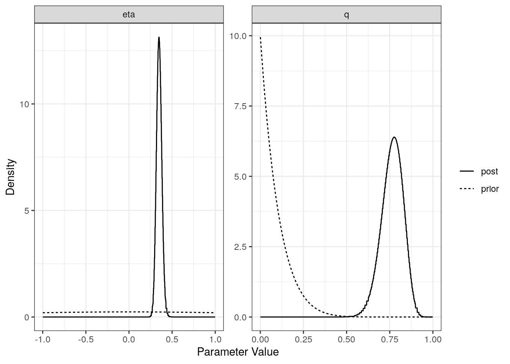
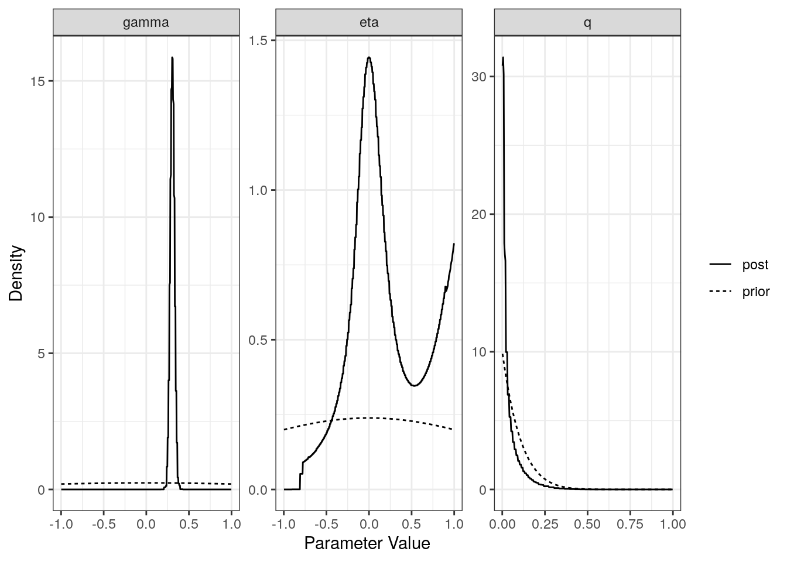
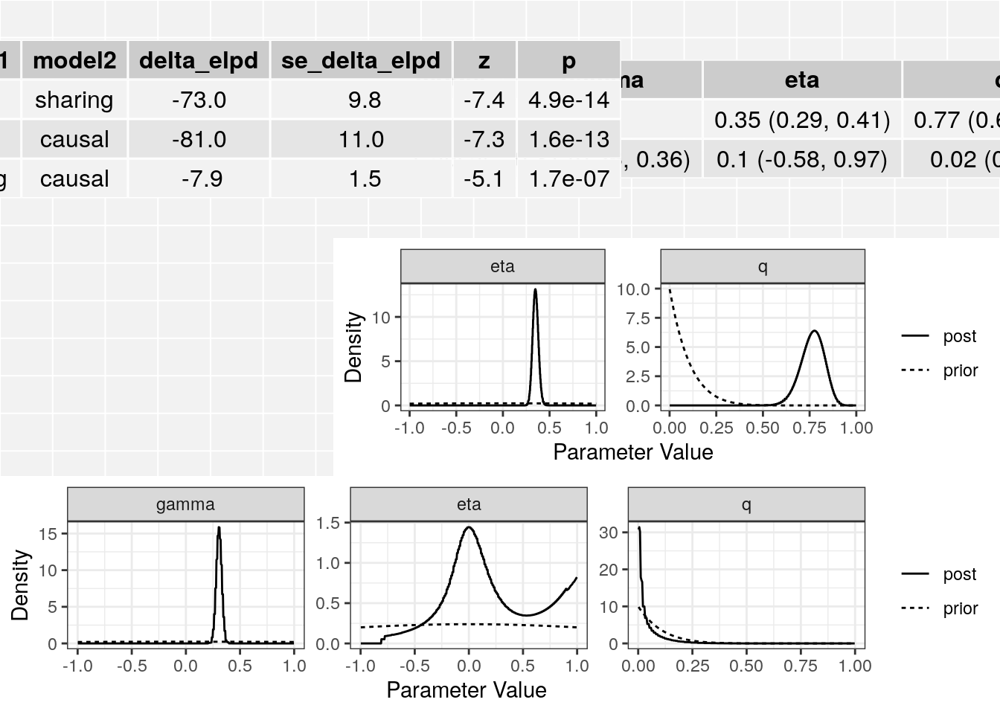

Small analysis for testing the package
Jean Morrison
2019-07-15
Last updated: 2019-07-15
Checks: 6 1
Knit directory: cause/
This reproducible R Markdown analysis was created with workflowr (version 1.4.0.9000). The Checks tab describes the reproducibility checks that were applied when the results were created. The Past versions tab lists the development history.
Great! Since the R Markdown file has been committed to the Git repository, you know the exact version of the code that produced these results.
The global environment had objects present when the code in the R Markdown file was run. These objects can affect the analysis in your R Markdown file in unknown ways. For reproduciblity it’s best to always run the code in an empty environment. Use wflow_publish or wflow_build to ensure that the code is always run in an empty environment.
The following objects were defined in the global environment when these results were created:
| Name | Class | Size |
|---|---|---|
| data | environment | 56 bytes |
| env | environment | 56 bytes |
The command set.seed(20181014) was run prior to running the code in the R Markdown file. Setting a seed ensures that any results that rely on randomness, e.g. subsampling or permutations, are reproducible.
Great job! Recording the operating system, R version, and package versions is critical for reproducibility.
Nice! There were no cached chunks for this analysis, so you can be confident that you successfully produced the results during this run.
Great job! Using relative paths to the files within your workflowr project makes it easier to run your code on other machines.
Great! You are using Git for version control. Tracking code development and connecting the code version to the results is critical for reproducibility. The version displayed above was the version of the Git repository at the time these results were generated.
Note that you need to be careful to ensure that all relevant files for the analysis have been committed to Git prior to generating the results (you can use wflow_publish or wflow_git_commit). workflowr only checks the R Markdown file, but you know if there are other scripts or data files that it depends on. Below is the status of the Git repository when the results were generated:
Ignored files:
Ignored: .Rhistory
Ignored: .Rproj.user/
Ignored: sim_results/
Ignored: src/RcppExports.o
Ignored: src/cause.so
Ignored: src/log_likelihood_functions.o
Untracked files:
Untracked: analysis/figure/
Untracked: cause.Rcheck/
Untracked: docs/cause.bib
Untracked: docs/figure/cause_figure_1_standalone.pdf
Untracked: gwas_data/
Untracked: ll_v7_notes.Rmd
Unstaged changes:
Modified: analysis/ldl_cad.Rmd
Note that any generated files, e.g. HTML, png, CSS, etc., are not included in this status report because it is ok for generated content to have uncommitted changes.
These are the previous versions of the R Markdown and HTML files. If you’ve configured a remote Git repository (see ?wflow_git_remote), click on the hyperlinks in the table below to view them.
| File | Version | Author | Date | Message |
|---|---|---|---|---|
| Rmd | 42712a3 | Jean Morrison | 2019-07-16 | wflow_publish(“analysis/little_test.Rmd”) |
Introduction
This is a mini version of the package walk through that runs quickly for doing tests. Right now the only difference is that we use fewer variants to compute the nuisance praameters and there is no supporting text.
Step 1: Format Data for CAUSE
library(readr)
library(dplyr)
Attaching package: 'dplyr'The following objects are masked from 'package:stats':
filter, lagThe following objects are masked from 'package:base':
intersect, setdiff, setequal, unionlibrary(cause)system("mkdir example_data/")
download.file("https://github.com/jean997/cause/blob/master/example_data/LDL_CAD_merged.RDS", destfile = "example_data/LDL_CAD_merged.RDS")X <- readRDS("example_data/LDL_CAD_merged.RDS")head(X) snp beta_hat_1 seb1 beta_hat_2 seb2 A1 A2
1 rs4747841 0.0037 0.0052 0.0106 0.0056 a G
2 rs4749917 -0.0033 0.0052 -0.0108 0.0056 a G
3 rs737656 0.0099 0.0054 0.0196 0.0058 a G
4 rs737657 0.0084 0.0054 0.0195 0.0058 a G
5 rs7086391 -0.0075 0.0067 0.0115 0.0072 a G
6 rs878177 -0.0073 0.0055 -0.0225 0.0059 a GStep 2: Calculate nuisance parameters
set.seed(100)
varlist <- with(X, sample(snp, size=10000, replace=FALSE))
params <- est_cause_params(X, varlist)Warning in est_cause_params(X, varlist): Fewer than 100,000 variants are being used to estimate parametrs. This can cause problems and is not recomended. You are using 10000 variants.Estimating CAUSE parameters with 10000 variants.
1 0.08679754
2 0.0009814571
3 2.367216e-05
4 5.7433e-07
5 1.393927e-08 Step 3: LD Pruning
download.file("https://github.com/jean997/cause/blob/master/example_data/top_ldl_pruned_vars.RDS", destfile = "example_data/top_ldl_pruned_vars.RDS")Step 4: Fit CAUSE
top_vars <- readRDS("example_data/top_ldl_pruned_vars.RDS")
res <- cause(X=X, variants = top_vars, param_ests = params)Estimating CAUSE posteriors using 1215 variants.Step 5: Look at Results
class(res)[1] "cause"names(res)[1] "sharing" "causal" "elpd" "loos" "data" "sigma_g" "qalpha"
[8] "qbeta" res$elpd model1 model2 delta_elpd se_delta_elpd z
1 null sharing -73.210676 9.836461 -7.442786
2 null causal -81.097026 11.135313 -7.282869
3 sharing causal -7.886351 1.546189 -5.100509class(res$sharing)[1] "cause_post"class(res$causal)[1] "cause_post"plot(res$sharing)
plot(res$causal)
The summary method will summarize the posterior medians and credible intervals.
summary(res, ci_size=0.95)p-value testing that causal model is a better fit: 1.7e-07
Posterior medians and 95 % credible intervals:
model gamma eta q
[1,] "Sharing" NA "0.35 (0.29, 0.41)" "0.77 (0.63, 0.88)"
[2,] "Causal" "0.31 (0.26, 0.36)" "0.1 (-0.58, 0.97)" "0.02 (0, 0.23)" The plot method applied to a cause object will arrange all of this information on one spread.
plot(res)
plot(res, type="data")
sessionInfo()R version 3.6.1 (2019-07-05)
Platform: x86_64-pc-linux-gnu (64-bit)
Running under: Ubuntu 18.04.2 LTS
Matrix products: default
BLAS: /usr/lib/x86_64-linux-gnu/openblas/libblas.so.3
LAPACK: /usr/lib/x86_64-linux-gnu/libopenblasp-r0.2.20.so
locale:
[1] LC_CTYPE=en_US.UTF-8 LC_NUMERIC=C
[3] LC_TIME=en_US.UTF-8 LC_COLLATE=en_US.UTF-8
[5] LC_MONETARY=en_US.UTF-8 LC_MESSAGES=en_US.UTF-8
[7] LC_PAPER=en_US.UTF-8 LC_NAME=C
[9] LC_ADDRESS=C LC_TELEPHONE=C
[11] LC_MEASUREMENT=en_US.UTF-8 LC_IDENTIFICATION=C
attached base packages:
[1] stats graphics grDevices utils datasets methods base
other attached packages:
[1] cause_0.2.0.0161 dplyr_0.8.3 readr_1.3.1
loaded via a namespace (and not attached):
[1] tidyselect_0.2.5 xfun_0.8 ashr_2.2-32
[4] purrr_0.3.2 lattice_0.20-38 colorspace_1.4-1
[7] vctrs_0.2.0 htmltools_0.3.6 loo_2.1.0
[10] yaml_2.2.0 rlang_0.4.0 mixsqp_0.1-97
[13] pillar_1.4.2 glue_1.3.1 matrixStats_0.54.0
[16] foreach_1.4.4 stringr_1.4.0 munsell_0.5.0
[19] gtable_0.3.0 workflowr_1.4.0.9000 codetools_0.2-16
[22] evaluate_0.14 labeling_0.3 knitr_1.23
[25] doParallel_1.0.14 pscl_1.5.2 parallel_3.6.1
[28] highr_0.8 Rcpp_1.0.1 backports_1.1.4
[31] scales_1.0.0 RcppParallel_4.4.3 truncnorm_1.0-8
[34] fs_1.3.1 gridExtra_2.3 ggplot2_3.2.0
[37] hms_0.5.0 digest_0.6.20 stringi_1.4.3
[40] numDeriv_2016.8-1.1 grid_3.6.1 rprojroot_1.3-2
[43] tools_3.6.1 magrittr_1.5 lazyeval_0.2.2
[46] tibble_2.1.3 crayon_1.3.4 whisker_0.3-2
[49] tidyr_0.8.3 pkgconfig_2.0.2 zeallot_0.1.0
[52] MASS_7.3-51.4 Matrix_1.2-17 SQUAREM_2017.10-1
[55] assertthat_0.2.1 rmarkdown_1.13 iterators_1.0.10
[58] R6_2.4.0 intervals_0.15.1 git2r_0.26.1
[61] compiler_3.6.1